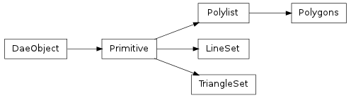

Bases: collada.polylist.Polylist
Class containing the data COLLADA puts in a <polygons> tag, a collection of polygons that can have holes.

A Polygons should not be created manually. Instead, call the collada.geometry.Geometry.createPolygons() method after creating a geometry instance.
Methods
| __init__(sources, material, polygons[, xmlnode]) | A Polygons should not be created manually. Instead, call the |
| bind(matrix, materialnodebysymbol) | Create a bound polygons from this polygons, transform and material mapping |
| load(collada, localscope, node) | |
| save() | |
| triangleset() | This performs a simple triangulation of the polylist using the fanning method. |
Attributes
| normal | Read-only numpy.array of size Nx3 where N is the number of normal values in the |
| normal_index | Read-only numpy.array of size Nx3 where N is the number of vertices in the primitive. |
| texcoord_indexset | Read-only tuple of texture coordinate index arrays. |
| texcoordset | Read-only tuple of texture coordinate arrays. |
| vertex | Read-only numpy.array of size Nx3 where N is the number of vertex points in the |
| vertex_index | Read-only numpy.array of size Nx3 where N is the number of vertices in the primitive. |
Create a bound polygons from this polygons, transform and material mapping
Gets a collada.source.InputList representing the inputs from a primitive
Read-only numpy.array of size Nx3 where N is the number of normal values in the primitive’s normal source array.
Read-only numpy.array of size Nx3 where N is the number of vertices in the primitive. To get the actual normal values, one can use this array to select into the normals array, e.g. normal[normal_index].
Read-only tuple of texture binormal index arrays. Each value is a numpy.array of size Nx3 where N is the number of vertices in the primitive. To get the actual texture binormals, one can use the array to select into the texbinormalset array, e.g. texbinormalset[0][texbinormal_indexset[0]] would select the first set of texture binormals.
Read-only tuple of texture binormal arrays. Each value is a numpy.array of size Nx3 where N is the number of texture binormals in the primitive’s source array.
Read-only tuple of texture coordinate index arrays. Each value is a numpy.array of size Nx2 where N is the number of vertices in the primitive. To get the actual texture coordinates, one can use the array to select into the texcoordset array, e.g. texcoordset[0][texcoord_indexset[0]] would select the first set of texture coordinates.
Read-only tuple of texture coordinate arrays. Each value is a numpy.array of size Nx2 where N is the number of texture coordinates in the primitive’s source array.
Read-only tuple of texture tangent index arrays. Each value is a numpy.array of size Nx3 where N is the number of vertices in the primitive. To get the actual texture tangents, one can use the array to select into the textangentset array, e.g. textangentset[0][textangent_indexset[0]] would select the first set of texture tangents.
Read-only tuple of texture tangent arrays. Each value is a numpy.array of size Nx3 where N is the number of texture tangents in the primitive’s source array.
This performs a simple triangulation of the polylist using the fanning method.
| Return type: | collada.triangleset.TriangleSet |
|---|
Read-only numpy.array of size Nx3 where N is the number of vertex points in the primitive’s vertex source array.
Read-only numpy.array of size Nx3 where N is the number of vertices in the primitive. To get the actual vertex points, one can use this array to select into the vertex array, e.g. vertex[vertex_index].